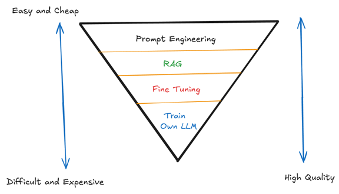
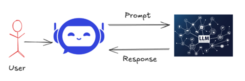
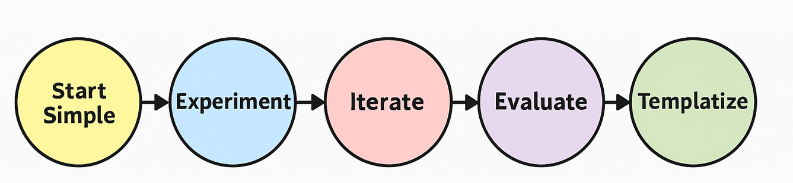
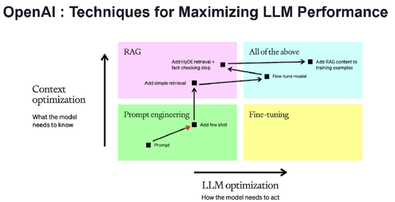
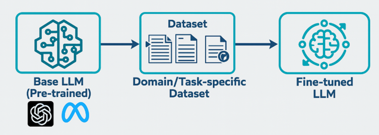
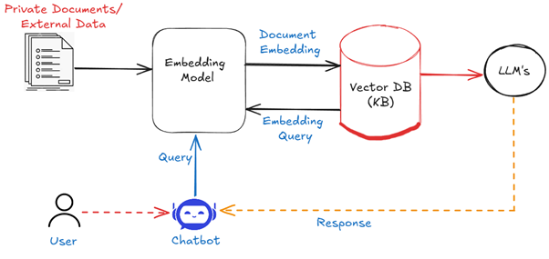
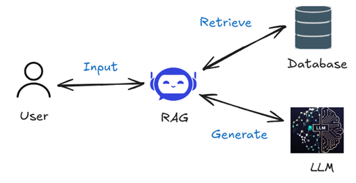
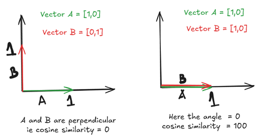
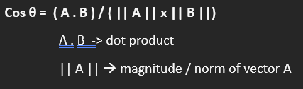
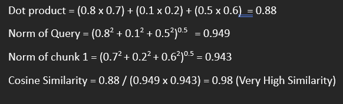

Generative AI - Encoder-Decoder, Attention, and Transformers
Generative AI
Encoder & Decoder
So far, we have learned different RNN models, but they have different problems:
- Simple RNN → Vanishing gradient problem
- LSTM-RNN
- GRU-RNN
LSTM (Long Short Term Memory) and GRU (Gated Reccurent Unit) have long short-term memory and are very efficient in solving problems like many-to-one RNN tasks (e.g., sentiment analysis, predicting the next word).
LSTM vs GRU Comparison
| LSTM | GRU (Gated Recurrent Unit) |
|---|---|
| Uses a gating mechanism with 3 gates: input, forget, output | Has 2 gates: update and reset |
| Excellent for long-term dependency | Performs similarly with fewer parameters |
| Maintains context over longer periods | More efficient and simpler |
| Good for vanishing gradient issues | Good performance and efficiency |
Limitation of LSTM and GRU - They lacks future context
Reason : Unidirectional Processing
LSTM & GRU lack future context due to one-way processing. Both process sequence in only one direction - from left to right (or from past to future). ie when making a prediction at position t, they only have access to information from 0 to t, not from t+1 onwards.
Example:
“The person who treats patients in the _____ is a doctor.”
A standard LSTM / GRU processing the blank would not yet know that “doctor” is coming, which would be a strong clue that “hospital” should fill the blank.
Solution: Bidirectional RNNs
Works by running two separate RNNs (can be LSTM or GRU cells) simultaneously in opposite directions and their outputs are combined.
Bidirectional RNN
- B-RNN captures both past (forward RNN) and future (backward RNN) context.
- Effective in translation, speech recognition, and language understanding tasks.
- Downside: Double computational cost.
- Not suited for real-time streaming applications.
Sequence-to-Sequence Processing
Example: Machine Translation (English to Hindi)
Giving a sequence of inputs and producing a sequence of outputs. Type of RNN needed : Many to Many

These kind of scenarios where sequence of inputs accepted and sequence of output should generated, Basic RNNs will struggle and will not give good results. That is why We need Encoder–Decoder Architecture.
Another example: chatbot
> Input: “Hi, how are you?” → Output: response is also a sequence.
Encoder-Decoder Architecture

1. Encoder Process
- Processes input sequence one token at a time.
- As it process each token, the hidden state is also updated to capture the information about the sequence.
- After processing the entire sequences, Final hidden state = context vector.
- This context vector represents the summarized representation of entire input sequence.
2. Context Vector Transfer
- Contains compressed representation of the input.
- Bottleneck: condenses all info into one fixed-length vector.
- Sent to decoder as initial hidden state to start the decoding process.
3. Decoder Process
- Receives context vector as initial hidden state.
- Outputs sequence (eg:- Translation) one token at a time.
- At each step decoder uses current hidden state and previously generated token.
Example : “Good Morning” → Translate to German Language
Embedded Layer
- Convert input sentence into tokens (via embedding layer or word2vec).
- Transforms each token into a fixed-size dense vector.
- These vectors capture word semantics.
Example: Suppose we have an english vocabulary of 1000 words and each word is represented as a 300-dimensional vector. The words “Good” and “Morning” are each converted into 300 dimensional vector using embedding layer.These vectors capture meaning and relationships between words (semantics)
“Good” → [0.13, -0.72, 0.05, …, 0.91] (300 numbers)
“Morning” → [0.44, -0.11, 0.63, …, -0.21] (300 numbers)
300 dimension Used in Word2Vec (Google) and GloVe (Stanford) pretrained embeddings to balance performance vs computational cos, butit could be
50, 100, 200 (faster, lighter)
300 (balanced)
512 or 768 (used in BERT, GPT models)
Encoder
- LSTM processes input sequence.
- Final state = context vector
Decoder
- Another LSTM to generate translated output.
- Uses context vector, previous token, and its own hidden state.
Output Layer (Fully Connected Softmax)
- Decoder output → Fully connected layer → Softmax : The output of LSTM at each step is passed though a fully connected dense layer to transform it into a vector of the same size as the German vocabulary.
- Converts to probability distribution : The vector is passed through softmax function -> turns into probability distribution between 0 and 1.
- Highest value index = predicted word
Limitation of Encoder–Decoder Architecture
- One fixed context vector (encoders final state) used for all outputs.
- If sentence is long, compression leads to information loss.

Since it only consider the context vector in final state (not from each state), the context vector tend to have more information with nearest word which has seen in nearest time stamp. This problem is called Information Bottleneck
Solution
Give equal importance to all words in input sequence regardless of relevance to the current output token.
Encoder-Decoder with Attention Mechanism
Allows the decoder to focus on different parts of the input sequence at each decoding step.Transformer Architecture
Replaces traditional RNNs in encoder-decoder with a self-attention mechanism to better capture relationships between all words in the sequence.
Therefore, with attention mechanism, the final one-time context vector transfer is replaced with a dynamic attention process, enabling the decoder to access different parts of the encoder output at each generation step.
Attention-Based Encoder-Decoder
- Encoder Output
- Keep all hidden states
- Keep all hidden states
- Alignment Score
- Score between current decoder state and each encoder state
- Score between current decoder state and each encoder state
- Attention Weights
- Use softmax to compute probabilities
- Use softmax to compute probabilities
- Context Vector
- Weighted sum of encoder states
- Weighted sum of encoder states
- Output Generation
- Combines context vector + previous output + decoder state
Limitations of Attention
- Sequential Processing – No parallelization
- Long-Range Dependency – Still struggles with very long sequences
- Vanishing/Exploding Gradients
- Computational Cost
Transformers
Why Transformers?
- Parallelization
- Processes whole sequence at once
- Faster on GPU/TPU
- Processes whole sequence at once
- Direct Connection
- Self-attention allows connections between all positions
- Solves information highway problem
- Self-attention allows connections between all positions
- Multi-head Attention
- Attend to different representations
- Capture syntax, semantics, relationships
- Enables parallel computation
- Attend to different representations
Sentence: “The athlete who won many medals stopped competing”
- Head 1: “athlete” → “stopped” (subject – verb)
- Head 2: “athlete” → “won” (relative clause)
- Head 3: “won” → “medals” (object)- Positional Encoding
- Adds unique vectors to word embeddings for word order awareness
"Police arrested protester" ≠ "Protester arrested police"- Scalability
- Efficient for large models and datasets
Context Vectors in Transformers
Contextualized representations of tokens using self-attention mechanism.
Steps:
1. Input Embedding
2. Positional Encoding
3. Self-Attention
4. Feedforward Layers
5. Contextualized Output
Contextual Embeddings vs Static Embeddings
Word2Vec (Static):
> Same vector for word in all contexts
→ “Light the candle” vs “Sun gives light”
Contextual Embedding:
- Varies depending on sentence
Example:
The person who treats people is a __________?
Transformer Architecture
Encoder:
- Input Embedding + Positional Encoding
- Self-Attention
- Feedforward Layers
- Encoder Output
Decoder:
- Output Embedding + Positional Encoding
- Masked Self-Attention
- Cross-Attention with Encoder Output
- Feedforward Layers
- Output Projection (Softmax)
BERT vs GPT
- BERT – Encoder only (e.g., QA, NER)
- GPT – Decoder only (text generation)
What is Generative AI?
- Creates original content: text, image, music, code, video
- Uses learned patterns to generate new, realistic outputs
Example: DALL·E – Generates new image from prompt
Types of Generative AI Models
- Generative Adversarial Networks (GANs)
- Variational Autoencoders (VAEs)
- Transformer Models (e.g., GPT)
GANs
- Image generation
- Generator vs Discriminator network
- Generator improves over time
VAEs
- Encodes input to latent space
- Reconstructs or generates new data
- Use case: reconstructing medical images
Transformers
- Effective in text generation
- Self-attention for context
- Scalable to large sequences and datasets
Large Language Models (LLMs)
- Trained on massive datasets
- Understand and generate human language
- Billions of parameters (e.g., GPT-3 = 175B)
Use Cases:
Chatbots, Q&A, summarization, speech recognition
How LLMs Work
Transformer Architecture
- Uses self-attention
- Generates token-by-token
Self-Supervised Learning
- Predicts next word without labels
Tokenization
- Breaks text into tokens
- Token limit includes input + output
LLM Providers
- OpenAI – GPT-3/4, DALL·E, Whisper
- Anthropic – Claude
- Meta AI – LLaMA
- Hugging Face – BERT, T5, GPT-2
- Microsoft Azure, Google Vertex, Amazon Titan
Choosing the Right Model
- Quality
- Speed
- Price
- Latency
Open Source vs Proprietary
Open Source
- Free and modifiable
- Examples: LLaMA, GPT-Neo
Proprietary
- API only
- Examples: GPT-4, Claude
HUGGING FACE AND Ollama
Hugging Face and Ollama serve different purposes in the LLM ecosystem:
Hugging Face
- A comprehensive AI platform and community hub
- Hosts thousands of open-source models across various AI domains (not just LLMs)
- Provides tools for model training, fine-tuning, and deployment
- Offers both free and paid services (Inference API)
- Includes datasets, documentation, and research papers
- A hosting platform where users can create and share machine learning web applications with minimal setup.
- Has enterprise-focused solutions
- Web-based interface with extensive collaboration features
- Focuses on being a complete MLOps platform with model cards, versioning, etc.
Ollama
- Focused specifically on running LLMs locally
- Simplified command-line interface for downloading and running open-source models
- Prioritizes ease of use for personal computing environments
- Optimized for desktop/laptop performance with efficient resource usage
- Provides a simple API for local application integration
- Includes model library management functionality
- Emphasizes privacy by keeping all processing on your machine
- Primarily targets individual developers and hobbyists
The main difference is scope and focus:
Hugging Face is a comprehensive AI platform with broad capabilities, while Ollama is a specialized tool designed specifically to make running LLMs locally as simple as possible.
Ollama Capabilities
- Generate text
- Answer a question
- Summarize text
- Translate text
HUGGING FACE
Hugging Face is a platform in which we can do Gen AI projects, NLP projects, and Computer Vision projects.
Here we are more focusing on Gen AI tasks.
Hugging Face has lots of Large Language Models and Datasets that can be used to train these kinds of LLMs.
Spaces – provides infrastructure for training models and deploy, but it is a paid service.
Hugging Face provides one pipeline, so with the help of a pipeline we can easily perform any kind of task.
Hugging Face also has one Python library called Transformers, which can be used for creating any kind of Gen AI project.
We will use a library called Transformers.
Transformer is the architecture but Transformers is the library.
It is named because it has all the models which are made based on Transformer architecture.
If we want to use the Hugging Face platform with the help of Python, we need the Transformers library (It has all the functionalities to use it with Python).
Pipeline – function used
from transformers import pipelineNLP Tasks
1. Text Classification
Assigning a category to a piece of text (e.g., Sentiment Analysis, Topic Classification, Spam Detection):
classifier = pipeline("text-classification")2. Text Generation
text_generator = pipeline("text-generation")3. Token Classification
Assigning labels to individual tokens in a sequence (e.g., Named Entity Recognition, Part-of-Speech Tagging):
token_classifier = pipeline("token-classification")4. Question Answering
Extracting an answer from a given context based on a question:
question_answerer = pipeline("question-answering")5. Text Generation
Generating text based on a given prompt (e.g., Language Modeling, Story Generation):
text_generator = pipeline("text-generation")6. Summarization
Condensing long documents into shorter summaries:
summarizer = pipeline("summarization")7. Translation
Translating text from one language to another:
translator = pipeline("translation", model="Helsinki-NLP/opus-mt-en-fr")8. Text2Text Generation
General-purpose text transformation (e.g., summarization, translation):
text2text_generator = pipeline("text2text-generation")Example Tasks using Hugging Face transformers Pipeline
Task 1: Sentiment Analysis
from transformers import pipeline
classifier = pipeline("sentiment-analysis")
result = classifier("I was happy to visit my home country")
print(result)Task 2: Text Generation
from transformers import pipeline
text_generator = pipeline("text-generation", model="distilbert/distilgpt2")
generated_text = text_generator(
"Today is a rainy day in London",
truncation=True,
num_return_sequences=2
)
print("Generated_text:\n", generated_text)Task 3: Question Answering
from transformers import pipeline
qa_model = pipeline("question-answering")
question = "What is my job?"
context = "I am developing AI models with Python."
print(qa_model(question=question, context=context))LLM Augmentation:
LLM (Large Language Model) Augmentation refers to techniques used to enhance the capabilities of large language models by integrating external data sources, retrieval mechanisms, fine-tuning strategies, or computational methods to improve their accuracy, relevance, and contextual understanding.
Techniques of LLM Augmentation
- Retrieval-Augmented Generation (RAG)
- Combines LLMs with an external knowledge base to fetch relevant information before generating a response.
- Fine-Tuning & Parameter Efficient Fine-Tuning (PEFT)
Fine-tuning the model using domain-specific datasets to improve its performance in a particular task.
Techniques:- Full fine-tuning
- LoRA (Low-Rank Adaptation)
- QLoRA (Quantized LoRA)
- Prefix Tuning
- Full fine-tuning
- Prompt Engineering & Prompt Tuning
Optimizing input prompts to get more accurate and relevant responses from the model.
Techniques:- Zero-shot, Few-shot, and Chain-of-Thought (CoT) prompting
- Self-consistency prompting
- Prompt tuning with soft tokens
- Zero-shot, Few-shot, and Chain-of-Thought (CoT) prompting
- Knowledge Injection & External APIs
Integrating real-time or domain-specific knowledge via APIs or databases.
Techniques:- SQL-based data augmentation
- Graph-based knowledge retrieval
- API calls to real-time sources
- SQL-based data augmentation
- Memory-Augmented LLMs
Allowing LLMs to retain contextual knowledge over multiple interactions.
Techniques:- Persistent memory (e.g., LangChain memory modules)
- Context caching and dynamic context expansion
- Persistent memory (e.g., LangChain memory modules)
- Multimodal Augmentation
Extending LLMs to process text along with other modalities like images, videos, and speech.
Techniques:- Vision-Language Models (e.g., BLIP, Flamingo)
- Audio-Language Fusion (e.g., Whisper + LLM)
- Vision-Language Models (e.g., BLIP, Flamingo)
- Self-Refinement & Reinforcement Learning
LLMs refine their own responses using reinforcement mechanisms.
Techniques:- Reinforcement Learning from Human Feedback (RLHF)
- Self-consistency and self-distillation
- Reinforcement Learning from Human Feedback (RLHF)

Prompt
The input or instruction we give to an LLM to guide its response. It could be question, a command or even just a phrase. The way we phrase our prompt plays a huge role in how the model responds. Prompts is like a set of directions that we give to the LLM to do tasks like Answer a question, summarize text, generate a story or even providing code snippets.
Understanding A Prompt
We can think of prompts as programs for LLMs. Just like how a traditional program gives instructions to a computer to perform a specific task. Prompt tells the LLM how to respond based on our input and is designed to get the model to produce responses that meet your specific requirements. The better the prompt, the better the models response. So, we can tell promps as the foundation of the interaction with the LLM. Its structure and clarity directly influence the quality of the response.

Elements of a prompt
Instruction or Task
The core request for the model, a specific task or instruction we want the model to perform.
Context
Background information to guide the response, like external information or additional context
Input Data
The input or question that we are interested to find a response for
Output Format
Defines how the response should be structured, the type or format of the output.
Examples - Elements of a Prompt
Instruction or Task
You will be provided with statements, and your task is to convert them to standard English
Context
You are a customer service representative. Explain the return policy to a customer who is unhappy with their purchase
Input Data
The customer purchased a smart speaker but reported that it is not connecting to their
Wi-Fi. They have tried restarting both the router and the speaker, but the issue persists
Output Format
Provide a list of the top 5 features of this product
Write a 2-paragraph summary of the article
Create a table comparing solar energy
What is Prompt Engineering
Crafting and refining prompts to improve model responses. Kind of thinking strategically to guide the model in the right direction. This involves experimenting and iterating with different wording, structure and styles.
The first prompt we use wont give the best result. So refine it through iteration to optimize the response by maximizing the performance of the model and get answers that meet our specific needs.
Why Prompt Engineering is important
- Helps to get more accurate and relevant responses and allows us to shape the models behaviour.
- We can design prompts to respond in a specific tone such as formal, friendly or technical. It also reduces vague or incorrect outputs by clarifying the instructions.

Templatize
Create a reusable structure for prompts that can be applied to similar tasks
Useful when doing repetitive tasks like summarize articles, generate reports, answer questions
Advanced Prompting Techniques
Fine-tune interactions for more accurate, meaningful and context-aware outputs.
Common prompting techniques:
- Zero-shot, one-shot and few-shot Prompting
- Chain-of-Thought Prompting
- Role-based and Instruction-based prompting
- Contextual Prompting with RAG
Zero-Shot Prompting
- Simplest and most widely used prompting technique
- Provide the model with no prior examples or context before asking it to complete a task
- The model must rely entirely on its pre-trained knowledge
- Ask to complete task or answer question without offering any specific guidance or examples
Example:
What is the capital of Japan? — Tokyo (based on its pre-existing knowledge)
Ideal for simple, factual queries or tasks where the model doesn’t need any further context or instructions
One-Shot Prompting
- Provide one example before asking the model to generate a response
- Gives the model a bit of direction by showing it a single instance of what you want
- Single example to follow, provide template or guide for its response
- Ideal for the model to adopt a specific format, tone, or structure
Example:
First show it one product description as an example, then ask it to write a new one for a different product
Few-Shot Prompting
- Provide a few examples of the task you want the model to perform before asking it
- Gives the model clearer guidance and helps it understand patterns, structure, and tone
- Produce a response that aligns expectations, useful for more complex or structured tasks
- Provide the model with multiple examples to generate a similar response
Example:
Giving two or three sample summaries helps the model understand the format and what kind of details to include
Chain-of-Thought Prompting
- Break down its thought process and provide a step-by-step explanation
- Useful for logical reasoning, problem-solving or multi-step processes
- Don’t just ask for a final answer — you ask the model to explain its reasoning in a step-by-step process
Example:
Solve a math problem, it will break down the calculation step by step
Instruction-based Prompting
- Give the model very clear and direct instructions
- Telling it exactly what you want it to do
- Useful when you need specific results, like a summary, list, or report
Example:
Write a 200-word summary of this article, then list three key points in bullet form
The model follows your exact guidelines, producing structured and organized results
Choosing the right optimization – Prompt Engineering, RAG and Fine-Tuning
Comparison: Prompt Engineering vs RAG vs Fine-Tuning
| Prompt Engineering | RAG (Retrieval-Augmented Generation) | Fine-Tuning |
|---|---|---|
| No additional training required | Brings real-time, external data into the model | Adapt the model to domain-specific language |
| Works out of the box | Great for dynamic content or live data queries | Lower latency and token usage |
| Easy to iterate and adjust | Reduces hallucination by retrieving documents | Best for well-defined, repeated use cases |
| Limited by model’s original knowledge | Requires infrastructure (vector stores, indexing) | Requires a large dataset and compute resources |
| Long prompts can increase costs (more tokens) | Slower response time due to retrieval steps | Fine-tuned models may lose generalization |
| Can lead to inconsistency without enough examples | Higher complexity to set up | Time-consuming to update when new data is available |
Technique Comparison of 3 Techniques
| Aspect | Prompt Engineering | RAG (Retrieval-Augmented Generation) | Fine-Tuning |
|---|---|---|---|
| Setup Complexity | Low | Medium (requires vector store setup) | High (requires dataset and compute resources) |
| Customization Level | Limited | High (dynamic retrieval) | Very High (specialized model behavior) |
| Response Time | Fast | Slower (retrieval adds latency) | Fast |
| Maintenance Requirement | Low | Medium (update vector stores) | High (re-train for new use cases) |
| Use Case Examples | Quick answers, chatbots | Real-time data, semantic search | Specialized apps (finance, legal, healthcare) |
| Cost | High (long prompts = more tokens) | Moderate (retrieval infrastructure costs) | High (training and infrastructure costs) |
Choosing the right optimization
Time is a Constraint
Start with Prompt Engineering — it’s fast, easy to experiment with, and requires no model changes.
If You Need Real-Time Data
Use RAG to fetch external or frequently updated information, ideal for apps like customer support, semantic search, or financial dashboards.
If You Need High Accuracy and Efficiency
Fine-tune the model when you want to reduce latency and token costs for well-defined, repetitive tasks like legal compliance checks or automated reporting.
Best Practice
The best practice is to combine all three techniques to get the most out of your LLM.
- Prompt Engineering helps you prototype and test prompts quickly
- RAG ensures that your model has access to the latest external information
- Fine-Tuning makes the model more efficient for domain-specific tasks by reducing token usage and improving accuracy

Training own model for LLM optimization
Why Train from Scratch?
- If you need deep, specific domain knowledge without any bias from pre-existing models
- If your data or the use case is unique, this approach provides more precise and controlled outcomes
- In sensitive industries, having a model trained entirely on internal data can help meet stringent compliance requirements
Drawbacks of Training from Scratch
- Requires substantial computational power, storage, and sometimes weeks to complete
- High-quality and large-scale data is essential, which can be costly and time-consuming to collect
- Need specialized skills in deep learning, hyperparameter tuning, and model optimization
- This process is lengthy compared to fine-tuning or prompt engineering
Fine-tuning LLMs
Fine-tuning is the process of taking a pre-trained machine learning model and further training it on a specific dataset to adapt it for a particular task or domain. The model is already trained on large amount of data but needs to be optimized for domain-specific knowledge.

Fine-tuning is like giving the doctor specialized training in cardiology.
After fine-tuning, the doctor retains their general medical knowledge but is now an expert in heart-related issues.
Why Fine-Tune a Pre-Trained Model?
Pre-trained language models, such as GPT variants, are built on large-scale, general-purpose datasets drawn from a wide range of internet sources. While these models exhibit strong general language understanding, they often lack the precision required for specific domains like healthcare, law, finance, or customer support.
Key Benefits of Fine-Tuning
Domain Adaptation
Pre-trained models do not inherently understand proprietary information or specialized terminology.
For instance, they won’t recognize your company’s latest product features unless fine-tuned on relevant documentation and data.
Enhanced Performance in Niche Tasks
Fine-tuned models can handle domain-specific tasks like legal document review, medical record summarization, or technical support automation more accurately.
Cost Optimization
By fine-tuning a smaller, efficient model (e.g., gpt-4o-mini), organizations can reduce dependency on larger, costlier models like gpt-4o, while still achieving high accuracy for specialized use cases.
Workflow Alignment
Fine-tuning aligns the model’s behavior with domain-specific workflows, data structures, and terminology, ensuring seamless integration into business processes.
Token Savings Through Shorter Prompts
Fine-tuned models inherently understand the domain context, reducing the need for lengthy and detailed instructions.
Reduced Prompt Length
Pre-trained models often require extended prompts or few-shot examples to steer them toward accurate responses.
Fine-tuned models need only minimal context, significantly reducing token usage.
Lower API Costs
Since most LLM APIs are priced based on token usage, shorter prompts lead to cost savings and increased throughput.
Faster Performance
Shorter prompts and smaller model sizes translate to lower latency, enabling near real-time responses—crucial for user-facing applications and high-frequency workloads.
Improved Latency and User Experience
Fine-tuning not only enhances model accuracy but also contributes to faster response times:
- Efficient Token Processing: With fewer tokens per request, models can process inputs more quickly.
- Improved Responsiveness: Applications backed by fine-tuned models provide a smoother, more interactive user experience.
- Scalability: Lower latency and reduced compute requirements make fine-tuned models more scalable for production use. ## Full Fine-Tuning Process: Step-by-Step Breakdown
1. Loading Pre-Trained Model Weights
What Happens Behind the Scenes:
- The model’s architecture (layers, dimensions, and connections) is initialized first.
- Pre-trained weights are fetched from a model hub like Hugging Face.
- These weights are loaded into corresponding layers of the initialized model.
- Each weight and bias parameter holds knowledge learned from pre-training on massive corpora (e.g., Wikipedia, BookCorpus).
Technical Details:
For a model like DistilBERT, approximately 66 million parameters are loaded. These include:
- Token embeddings
- Positional embeddings
- Multi-head self-attention weights
- Feed-forward network parameters
- Layer normalization parameters
These weights encode the model’s understanding of language syntax, semantics, and relationships.
TensorFlow Example:
from transformers import TFAutoModelForSequenceClassification
model = TFAutoModelForSequenceClassification.from_pretrained("distilbert-base-uncased")2. Adding a Task-Specific Head Layer
What Happens Behind the Scenes:
- The original model typically ends with a general-purpose output layer
- This gets replaced with a new layer designed specifically for your task
- For classification, this is usually a linear layer with N outputs (where N = number of classes)
- The new layer is initialized with random weights since it hasn’t been trained yet
Technical Details:
- For sentiment classification with 2 classes, the head would be a Dense layer with 2 output neurons
- The head receives the pooled output from the final transformer layer (usually the
[CLS]token representation)
- In Hugging Face, this happens automatically when you specify
num_labels
- The classification head is much smaller than the base model (typically <1% of total parameters)
Code Example:
model = TFAutoModelForSequenceClassification.from_pretrained(
"distilbert-base-uncased",
num_labels=2 # Creates a classification head with 2 outputs
)What’s Happening in the Model During Fine-tuning
Layer-by-Layer Adaptation:
- Embedding Layer: Adjusts to prioritize domain-specific vocabulary and usage patterns
- Lower Transformer Layers: Refine basic pattern recognition for your domain’s language
- Middle Transformer Layers: Adapt semantic understanding to your specific context
- Upper Transformer Layers: Become more task-focused, identifying features relevant to classification
- Classification Head: Learns to map from contextual representations to your specific label space
The Gradient Flow:
- Different magnitudes of updates typically occur at different layers
- Later layers usually change more dramatically than earlier layers
- This creates a natural progression from general language understanding (lower layers) to task-specific processing (upper layers)
Concrete Example
Let’s see what’s happening in a sentiment classification task:
- Initial State
- The model’s parameters can recognize general sentiment words (“good”, “bad”, “excellent”)
- But it might not understand domain-specific indicators
- The model’s parameters can recognize general sentiment words (“good”, “bad”, “excellent”)
- During Fine-tuning
- The embeddings gradually shift to better represent domain vocabulary
(e.g., in movie reviews, “gripping” becomes more associated with positive sentiment)
- Attention mechanisms learn to focus on the parts of sentences that carry sentiment in your domain
- The classification head learns the boundary between your specific positive and negative examples
- The embeddings gradually shift to better represent domain vocabulary
- Final State
- The model has:
- Retained its general language understanding
- Adapted to domain-specific vocabulary and patterns
- Developed specialized attention patterns for your task
- Learned classification boundaries specific to your labeled examples
- Retained its general language understanding
- The model has:
This entire process enables the model to leverage its pre-trained knowledge while adapting specifically to your task and domain, ultimately resulting in better performance than either training from scratch or using the pre-trained model without fine-tuning.
Retrieval Augmented Generation (RAG)
Limitations of LLMs
- LLMs can’t answer correctly to private data
- LLMs can’t provide the most current information
Example:
LLMs can’t provide information about a company’s private organizational data or a website we created and deployed.
When we want to develop an application which can answer private data and current data, RAG is a solution.

- RAG allows LLMs to use external sources for better performance.
- Whenever a user gives any kind of question related to private data, it will go to the Knowledge Base (KB), and the KB will return a response based on the question.
- The LLM will process that response along with the query and generate the correct answer.

Retrieval-Augmented Generation (RAG)
RAG is a system designed to enhance LLMs by integrating them with a retrieval mechanism.
It Has 2 Components:
1. Retriever Component
- Responsible for finding and accessing relevant information from external knowledge sources
- When a question is submitted, the retriever analyzes the query to understand what information is needed and searches through the knowledge base (KB)
- Identifies and pulls the most relevant documents, facts, and data points
- Then prepares the retrieved information to be passed to the generator
2. Generator Component
- The LLM receives both the original question and the context provided by the retriever
- The LLM processes this combined input through its neural network
- Synthesizes the information to formulate a coherent, relevant response
- Finally, generates text that incorporates both its pre-trained knowledge and the retrieved context
Simple RAG Implementation
RAG typically works in 2 Phases:
1) Indexing Phase
- Break documents into smaller chunks (e.g., paragraphs, sentences)
- Convert each chunk into an embedding vector using a model
- Store these chunks and vectors in a vector database
2) Retrieval and Generation Phase
- Convert a user query into a vector using the same embedding model
- Find chunks with the most similar vectors using cosine similarity
- Pass the most relevant chunks to the LLM to generate a response
3 Main Components
Embedding Model
Converts text into vector representations that capture semantic meaningVector Database
Stores knowledge chunks and their corresponding vector representationsLLM
A language model that generates responses using retrieved information
Vector Databases
- Vector databases store both knowledge chunks and their vector representations.
Knowledge Chunks:
- Pieces of text from source documents
- RAG systems split the document into smaller, manageable pieces called “chunks”
- These might be:
- Individual paragraphs
- Sentences
- Fixed-length segments of text (e.g., 100 characters)
- Individual paragraphs
Vector Representations:
- Also called embeddings: numerical translations of text into a series of numbers
- These numbers capture the semantic meaning of the text in a way that computers can process
- Vectors typically have hundreds or thousands of dimensions, with each dimension representing some aspect of meaning learned by the embedding model
Vector Database Stores Pairs of Items:
- The original text chunk
- The vector embedding of that chunk
Why Store Both?
- Efficiency
- Storing embeddings allows for fast semantic searches
- Search vs Retrieval
- Vectors are used for searching (finding which chunks are semantically relevant to a query)
- Original chunks are used for retrieving the actual content — shown to users or passed to the LLM
- Vectors are used for searching (finding which chunks are semantically relevant to a query)
- Context Preservation
- Original text preserves important context and formatting that might be lost in the vector representation
Cosine Similarity
- A mathematical function that measures how similar two vectors are
- Value range: 0 to 1 (for embeddings in positive space)
- Closer to 1 → higher similarity
Geometric Meaning:
- Cosine similarity measures the cosine of the angle between two vectors in multi-dimensional space
| Cosine Value | Angle Between Vectors | Meaning |
|---|---|---|
| 1 | 0° | Vectors are identical |
| 0 | 90° | Vectors are perpendicular |
| -1 | 180° | Vectors point in opposite directions |
Note: For most text embeddings (which are non-negative), cosine similarity values typically range from 0 to 1

Cosine Similarity Formula

Why Cosine Similarity in RAG Systems?
- Direction matters more than magnitude
- It focuses on semantic meaning (vector direction), not scale
- It focuses on semantic meaning (vector direction), not scale
- Normalization
- Handles differences in document length since it is based on angle, not distance
- Handles differences in document length since it is based on angle, not distance
- Efficiency
- Fast to compute, especially with vector databases
- Fast to compute, especially with vector databases
- Interpretability
- Output range (0 to 1) is easy to interpret as a similarity percentage
Example
Query:
"How fast do cats run?" → [0.8, 0.1, 0.5]
Chunk 1:
"Cats can travel at 31 mph" → [0.7, 0.2, 0.6]
Chunk 2: …
